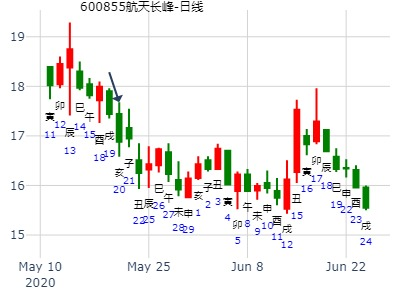
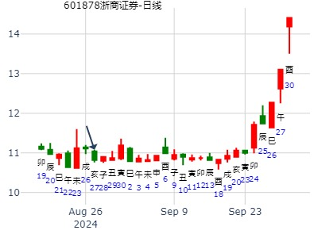
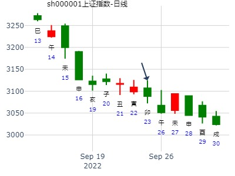
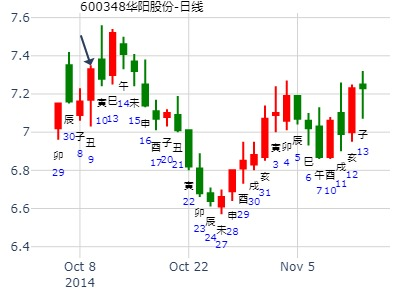

21:57 报数 3，8
火地晋，又是煤。本周最后一天集体发动。.md
热点确认又是煤。
卦者： 悟道喜悦 问事：2016年1月上证
从酉跌到酉。哪怕是子月的酉就开跌，流日重于流月。
时间: 2016-01-02
干支: 乙未年戊子月癸未日 (旬空: 申酉 )
晋静卦 (游魂)
白虎 ▅▅▅▅▅ 官鬼巳火
腾蛇 ▅▅ ▅▅ 父母未土
勾陈 ▅▅▅▅▅ 兄弟酉金 世
朱雀 ▅▅ ▅▅ 妻财卯木
青龙 ▅▅ ▅▅ 官鬼巳火
玄武 ▅▅ ▅▅ 父母未土 应
主帖标题: 此股今年走势如何? 晋——（卦形：离上坤下）
出生：没填 年 性别：男 占事：没填
排卦：元亨利贞网六爻在线排盘系统
公历起卦时间：2009年2月8日8时20分 (手工指定)
干支：己丑年 丙寅月 甲申日 戊辰时 （日空：午未）
晋静卦(游魂)
玄武 ▅▅▅▅▅ 官鬼巳火
白虎 ▅▅ ▅▅ 父母未土
腾蛇 ▅▅▅▅▅ 兄弟酉金 世
勾陈 ▅▅ ▅▅ 妻财卯木
朱雀 ▅▅ ▅▅ 官鬼巳火
青龙 子孙子水▅▅ ▅▅ 父母未土 应
注：无股票名，暂以大盘代替。
上证未来12个月走势
拜年卦，今早测股市：
公历起卦时间：2013年2月9日9时30分 (手工指定)
干支：癸巳年 甲寅月 丙午日 癸巳时 （日空：寅卯）
乾宫：火地晋 (游魂)
青龙 官鬼己巳火 ▅▅▅▅▅
玄武 父母己未土 ▅▅ ▅▅
白虎 兄弟己酉金 ▅▅▅▅▅ 世
腾蛇 妻财乙卯木 ▅▅ ▅▅
勾陈 官鬼乙巳火 ▅▅ ▅▅
朱雀 子孙甲子水 父母乙未土 ▅▅ ▅▅ 应
子孙休囚，飞克伏，难引拨；看来也就巳、午月有点涨；卯月也能涨？
红星发展未来一个月。火地晋静卦，横盘。财爻得月助官暗动。风生水起。.md
时间: 2015-02-16
干支: 乙未年戊寅月癸亥日 (旬空: 子丑 )
晋静卦
(游魂)
白虎 ▅▅▅▅▅ 官鬼巳火
腾蛇 ▅▅ ▅▅ 父母未土
勾陈 ▅▅▅▅▅ 兄弟酉金 世
朱雀 ▅▅ ▅▅ 妻财卯木
青龙 ▅▅ ▅▅ 官鬼巳火
玄武 子孙子水▅▅ ▅▅ 父母未土 应
财子各得月令生助，敌不过兄弟持世，不跌也得横盘。
出生：没填 年 性别：男 占事：600202哈空调明天涨跌
公历起卦时间：2016年2月15日15时30分 (电脑自动)
干支：丙申年 庚寅月 丁卯日 戊申时 （日空：戌亥）
神煞：驿马－巳 桃花－子 日禄－午 贵人－酉，亥
乾宫：火地晋 (游魂) 乾宫：火地晋 (游魂)
六神 伏神 本 卦 变 卦
青龙 官鬼己巳火 ▅▅▅▅▅ 官鬼己巳火 ▅▅▅▅▅
玄武 父母己未土 ▅▅ ▅▅ 父母己未土 ▅▅ ▅▅
白虎 兄弟己酉金 ▅▅▅▅▅ 世 兄弟己酉金 ▅▅▅▅▅ 世
腾蛇 妻财乙卯木 ▅▅ ▅▅ 妻财乙卯木 ▅▅ ▅▅
勾陈 官鬼乙巳火 ▅▅ ▅▅ 官鬼乙巳火 ▅▅ ▅▅
朱雀 子孙甲子水 父母乙未土 ▅▅ ▅▅ 应 父母乙未土 ▅▅ ▅▅ 应
3月上证大盘涨跌卦
占事：3月上证大盘涨跌？
公历起卦时间：2017年2月28日16时38分 (手工指定)
干支：丁酉年 壬寅月 丙戌日 丙申时 （日空：午未）
神煞：驿马－申 桃花－卯 日禄－巳 贵人－酉，亥
乾宫：火地晋 (游魂) 乾宫：火地晋 (游魂)
六神 伏神 本 卦 变 卦
青龙 官鬼己巳火 ▅▅▅▅▅ 官鬼己巳火 ▅▅▅▅▅
玄武 父母己未土 ▅▅ ▅▅ 父母己未土 ▅▅ ▅▅
白虎 兄弟己酉金 ▅▅▅▅▅ 世 兄弟己酉金 ▅▅▅▅▅ 世
腾蛇 妻财乙卯木 ▅▅ ▅▅ 妻财乙卯木 ▅▅ ▅▅
勾陈 官鬼乙巳火 ▅▅ ▅▅ 官鬼乙巳火 ▅▅ ▅▅
朱雀 子孙甲子水 父母乙未土 ▅▅ ▅▅ 应 父母乙未土 ▅▅ ▅▅ 应
大家一起来：试测上证2.18-2.28何日涨幅最大？
yan试测上证2.17庚寅-2.21何日涨幅最大？p
出生：2020 年 性别：男 占事：没填
排卦：元亨利贞网六爻在线排盘系统 http://www.china95.net
公历起卦时间：2020年2月22日20时27分 (电脑自动)
干支：庚子年 戊寅月 乙未日 丙戌时 （日空：辰巳）
神煞：驿马－巳 桃花－子 日禄－卯 贵人－子，申
乾宫：火地晋 (游魂) 乾宫：火地晋 (游魂)
六神 伏神 本 卦 变 卦
玄武 官鬼己巳火 ▅▅▅▅▅ 官鬼己巳火 ▅▅▅▅▅
白虎 父母己未土 ▅▅ ▅▅ 父母己未土 ▅▅ ▅▅
螣蛇 兄弟己酉金 ▅▅▅▅▅ 世 兄弟己酉金 ▅▅▅▅▅ 世
勾陈 妻财乙卯木 ▅▅ ▅▅ 妻财乙卯木 ▅▅ ▅▅
朱雀 官鬼乙巳火 ▅▅ ▅▅ 官鬼乙巳火 ▅▅ ▅▅
青龙 子孙甲子水 父母乙未土 ▅▅ ▅▅ 应 父母乙未土 ▅▅ ▅▅ 应
六爻预测现货黄金至下周四走势
公历起卦时间：2022年2月25日9时48分 (在线摇卦)
干支：壬寅年 壬寅月 己酉日 己巳时 （日空：寅卯）
乾宫：火地晋 (游魂) 乾宫：火地晋 (游魂)
六神 伏神 本 卦 变 卦
勾陈 官鬼己巳火 ▅▅▅▅▅ 官鬼己巳火 ▅▅▅▅▅
朱雀 父母己未土 ▅▅ ▅▅ 父母己未土 ▅▅ ▅▅
青龙 兄弟己酉金 ▅▅▅▅▅ 世 兄弟己酉金 ▅▅▅▅▅ 世
玄武 妻财乙卯木 ▅▅ ▅▅ 妻财乙卯木 ▅▅ ▅▅
白虎 官鬼乙巳火 ▅▅ ▅▅ 官鬼乙巳火 ▅▅ ▅▅
螣蛇 子孙甲子水 父母乙未土 ▅▅ ▅▅ 应 父母乙未土 ▅▅ ▅▅ 应
占事：300068南都电源在2015年三月的走
女 公历起卦时间：2015年3月2日14时38分 (电脑自动)
干支：乙未年 戊寅月 丁丑日 丁未时 （日空：申酉）
乾宫：火地晋 (游魂) 乾宫：火地晋 (游魂)
青龙 官鬼己巳火 ▅▅▅▅▅ 官鬼己巳火 ▅▅▅▅▅
玄武 父母己未土 ▅▅ ▅▅ 父母己未土 ▅▅ ▅▅
白虎 兄弟己酉金 ▅▅▅▅▅ 世 兄弟己酉金 ▅▅▅▅▅ 世
腾蛇 妻财乙卯木 ▅▅ ▅▅ 妻财乙卯木 ▅▅ ▅▅
勾陈 官鬼乙巳火 ▅▅ ▅▅ 官鬼乙巳火 ▅▅ ▅▅
朱雀 子孙甲子水 父母乙未土 ▅▅ ▅▅ 应 父母乙未土 ▅▅ ▅▅ 应
晋：康侯用锡马蕃庶，昼日三接。彖曰：晋，进也。 明出地上，顺而丽乎大明，柔进。
象曰：明出地上，晋；君子以自昭明德。
晋卦本是兄弟持世的烂卦，正好寅卯月世爻兄弟衰，财旺而能涨。
测沪深股市今日走势 ：（3月28日）丹霞天然
| 测沪深股市今日走势
起卦方式：手动摇卦
公历时间：2016年3月28日7时7分
干 支：丙申年 辛卯月 己酉日 戊辰时
旬 空：辰巳 午未 (寅卯) 戌亥
乾宫：火地晋（游魂）
六神 伏 神 【本 卦】
勾陈 ▄▄▄▄▄ 官鬼己巳火
朱雀 ▄▄ ▄▄ 父母己未土
青龙 ▄▄▄▄▄ 兄弟己酉金 世
玄武 ▄▄ ▄▄ 妻财乙卯木
白虎 ▄▄ ▄▄ 官鬼乙巳火
螣蛇 子孙甲子水 ▄▄ ▄▄ 父母乙未土 应 |
手中一股下周涨跌
6066本周涨跌
手摇卦
公历时间：2020年3月23日10时19分 农历时间：庚子年 二月三十日巳时
干 支：庚子年 己卯月 乙丑日 辛巳时
旬 空：辰巳 申酉 戌亥 申酉
神 煞：驿马─亥 桃花─午 日禄─卯 贵人─子，申
中国预测网纳甲六爻排盘
乾宫：火地晋（游魂）
六神 伏 神 【本 卦】
玄武 ▄▄▄▄▄ 官鬼己巳火
白虎 ▄▄ ▄▄ 父母己未土
螣蛇 ▄▄▄▄▄ 兄弟己酉金 世
勾陈 ▄▄ ▄▄ 妻财乙卯木
朱雀 ▄▄ ▄▄ 官鬼乙巳火
青龙 子孙甲子水 ▄▄ ▄▄ 父母乙未土 应
注：原贴代码不全，以600066代替。
占事：600459贵研铂业明天涨跌， 马云才。
公历起卦时间：2019年4月22日16时11分 (电脑自动)
干支：己亥年 戊辰月 己丑日 壬申时 （日空：午未）
乾宫：火地晋 (游魂) 乾宫：火地晋 (游魂)
六神 伏神 本 卦 变 卦
勾陈 官鬼己巳火 ▅▅▅▅▅ 官鬼己巳火 ▅▅▅▅▅
朱雀 父母己未土 ▅▅ ▅▅ 父母己未土 ▅▅ ▅▅
青龙 兄弟己酉金 ▅▅▅▅▅ 世 兄弟己酉金 ▅▅▅▅▅ 世
玄武 妻财乙卯木 ▅▅ ▅▅ 妻财乙卯木 ▅▅ ▅▅
白虎 官鬼乙巳火 ▅▅ ▅▅ 官鬼乙巳火 ▅▅ ▅▅
腾蛇 子孙甲子水 父母乙未土 ▅▅ ▅▅ 应 父母乙未土 ▅▅ ▅▅ 应
红牛- 迎驾贡酒5.4--5.13走势——乾隆币卦
迎驾贡酒巳月
公历时间：2016年5月4日9时22分
干 支：丙申年 壬辰月 丙戌日 癸巳时
旬 空：辰巳 午未 (午未) 午未
乾宫：火地晋（游魂）
六神 伏 神 【本 卦】
青龙 ▄▄▄▄▄ 官鬼己巳火
玄武 ▄▄ ▄▄ 父母己未土
白虎 ▄▄▄▄▄ 兄弟己酉金 世
螣蛇 ▄▄ ▄▄ 妻财乙卯木
勾陈 ▄▄ ▄▄ 官鬼乙巳火
朱雀 子孙甲子水 ▄▄ ▄▄ 父母乙未土 应
风生水起 占事：大盘巳月 起卦方式：手动摇卦
公历时间：2016年5月5日11时39分
干 支：丙申年 癸巳月 丁亥日 丙午时
旬 空：辰巳 午未 (午未) 寅卯
乾宫：火地晋（游魂）
六神 伏 神 【本 卦】
青龙 ▄▄▄▄▄ 官鬼己巳火
玄武 ▄▄ ▄▄ 父母己未土
白虎 ▄▄▄▄▄ 兄弟己酉金 世
螣蛇 ▄▄ ▄▄ 妻财乙卯木
勾陈 ▄▄ ▄▄ 官鬼乙巳火
朱雀 子孙甲子水 ▄▄ ▄▄ 父母乙未土 应
楼主| 发表于 2020-5-20 14:35 | 只看该作者
航天长峰从现在起何月出现20%涨幅？
排卦：元亨利贞网六爻在线排盘系统 https://www.suan98.com
公历起卦时间：2020年5月20日14时34分 (电脑自动)
干支：庚子年 辛巳月 癸亥日 己未时 （日空：子丑）
乾宫：火地晋 (游魂) 乾宫：火地晋 (游魂)
六神 伏神 本 卦 变 卦
白虎 官鬼己巳火 ▅▅▅▅▅ 官鬼己巳火 ▅▅▅▅▅
螣蛇 父母己未土 ▅▅ ▅▅ 父母己未土 ▅▅ ▅▅
勾陈 兄弟己酉金 ▅▅▅▅▅ 世 兄弟己酉金 ▅▅▅▅▅ 世
朱雀 妻财乙卯木 ▅▅ ▅▅ 妻财乙卯木 ▅▅ ▅▅
青龙 官鬼乙巳火 ▅▅ ▅▅ 官鬼乙巳火 ▅▅ ▅▅
玄武 子孙甲子水 父母乙未土 ▅▅ ▅▅ 应 父母乙未土 ▅▅ ▅▅ 应

出生：1971年 性别：女
占事：002500 -- 6.6-7.6 -巳月
公历起卦时间：2016年6月1日18时1分 (电脑自动排盘)
干支：丙申年 癸巳月 甲寅日 癸酉时 （日空：子丑）
乾宫：火地晋 (游魂) 乾宫：火地晋 (游魂)
六神 伏神 本 卦 变 卦
玄武 官鬼巳火 ▅▅▅▅▅ 官鬼巳火 ▅▅▅▅▅
白虎 父母未土 ▅▅ ▅▅ 父母未土 ▅▅ ▅▅
螣蛇 兄弟酉金 ▅▅▅▅▅ 世 兄弟酉金 ▅▅▅▅▅ 世
勾陈 妻财卯木 ▅▅ ▅▅ 妻财卯木 ▅▅ ▅▅
朱雀 官鬼巳火 ▅▅ ▅▅ 官鬼巳火 ▅▅ ▅▅
青龙 子孙子水 父母未土 ▅▅ ▅▅ 应 父母未土 ▅▅ ▅▅ 应
航天长峰6.10甲申-6.12丙戌五何时 底？
公历起卦时间：2020年6月11日8时59分 (电脑自动)
干支：庚子年 壬午月 乙酉日 庚辰时 （日空：午未）
乾宫：火地晋 (游魂) 乾宫：火地晋 (游魂)
六神 伏神 本 卦 变 卦
玄武 官鬼己巳火 ▅▅▅▅▅ 官鬼己巳火 ▅▅▅▅▅ f
白虎 父母己未土 ▅▅ ▅▅ 父母己未土 ▅▅ ▅▅
螣蛇 兄弟己酉金 ▅▅▅▅▅ 世 兄弟己酉金 ▅▅▅▅▅ 世
勾陈 妻财乙卯木 ▅▅ ▅▅ 妻财乙卯木 ▅▅ ▅▅
朱雀 官鬼乙巳火 ▅▅ ▅▅ 官鬼乙巳火 ▅▅ ▅▅
青龙 子孙甲子水 父母乙未土 ▅▅ ▅▅ 应 父母乙未土 ▅▅ ▅▅ 应
8月1-5日大盘涨跌卦
占事：8月1-5日大盘涨跌？
公历起卦时间：2011年7月29日16时51分 (手工指定)
干支：辛卯年 乙未月 乙酉日 甲申时 （日空：午未）
乾宫：火地晋 (游魂) 乾宫：火地晋 (游魂)
六神 伏神 本 卦 变 卦
玄武 官鬼己巳火 ▅▅▅▅▅ 官鬼己巳火 ▅▅▅▅▅
白虎 父母己未土 ▅▅ ▅▅ 父母己未土 ▅▅ ▅▅
腾蛇 兄弟己酉金 ▅▅▅▅▅ 世 兄弟己酉金 ▅▅▅▅▅ 世
勾陈 妻财乙卯木 ▅▅ ▅▅ 妻财乙卯木 ▅▅ ▅▅
朱雀 官鬼乙巳火 ▅▅ ▅▅ 官鬼乙巳火 ▅▅ ▅▅
青龙 子孙甲子水 父母乙未土 ▅▅ ▅▅ 应 父母乙未土 ▅▅ ▅▅ 应

占事：002173千足珍珠下周涨跌
排卦：元亨利贞网六爻在线排盘系统 http://www.china95.net
公历起卦时间：2015年7月31日16时46分 (在线摇卦)
干支：乙未年 癸未月 戊申日 庚申时 （日空：寅卯）
乾宫：火地晋 (游魂) 乾宫：火地晋 (游魂)
六神 伏神 本 卦 变 卦
朱雀 官鬼己巳火 ▅▅▅▅▅ 官鬼己巳火 ▅▅▅▅▅
青龙 父母己未土 ▅▅ ▅▅ 父母己未土 ▅▅ ▅▅
玄武 兄弟己酉金 ▅▅▅▅▅ 世 兄弟己酉金 ▅▅▅▅▅ 世
白虎 妻财乙卯木 ▅▅ ▅▅ 妻财乙卯木 ▅▅ ▅▅
腾蛇 官鬼乙巳火 ▅▅ ▅▅ 官鬼乙巳火 ▅▅ ▅▅
勾陈 子孙甲子水 父母乙未土 ▅▅ ▅▅ 应 父母乙未土 ▅▅ ▅▅ 应
出生：没填 年 性别：男 占事：300633开立医疗明天涨跌
排卦：元亨利贞网六爻在线排盘系统 http://www.china95.net
公历起卦时间：2017年7月31日16时1分 (电脑自动)
干支：丁酉年 丁未月 己未日 壬申时 （日空：子丑）
神煞：驿马－巳 桃花－子 日禄－午 贵人－子，申
乾宫：火地晋 (游魂) 乾宫：火地晋 (游魂)
六神 伏神 本 卦 变 卦
勾陈 官鬼己巳火 ▅▅▅▅▅ 官鬼己巳火 ▅▅▅▅▅
朱雀 父母己未土 ▅▅ ▅▅ 父母己未土 ▅▅ ▅▅
青龙 兄弟己酉金 ▅▅▅▅▅ 世 兄弟己酉金 ▅▅▅▅▅ 世
玄武 妻财乙卯木 ▅▅ ▅▅ 妻财乙卯木 ▅▅ ▅▅
白虎 官鬼乙巳火 ▅▅ ▅▅ 官鬼乙巳火 ▅▅ ▅▅
腾蛇 子孙甲子水 父母乙未土 ▅▅ ▅▅ 应 父母乙未土 ▅▅ ▅▅ 应
2013年9月大盘涨跌卦
占事：2013年9月大盘涨跌？
公历起卦时间：2013年8月30日15时26分 (手工指定)
干支：癸巳年 庚申月 戊辰日 庚申时 （日空：戌亥）
乾宫：火地晋 (游魂) 乾宫：火地晋 (游魂)
六神 伏神 本 卦 变 卦
朱雀 官鬼己巳火 ▅▅▅▅▅ 官鬼己巳火 ▅▅▅▅▅
青龙 父母己未土 ▅▅ ▅▅ 父母己未土 ▅▅ ▅▅
玄武 兄弟己酉金 ▅▅▅▅▅ 世 兄弟己酉金 ▅▅▅▅▅ 世
白虎 妻财乙卯木 ▅▅ ▅▅ 妻财乙卯木 ▅▅ ▅▅
腾蛇 官鬼乙巳火 ▅▅ ▅▅ 官鬼乙巳火 ▅▅ ▅▅
勾陈 子孙甲子水 父母乙未土 ▅▅ ▅▅ 应 父母乙未土 ▅▅ ▅▅ 应
注释： 此卦例外。申月辰日还能涨。
姓名：戒 男 占事：下周股票财运
公历时间：2015年8月15日22时24分
干 支：乙未年 甲申月 癸亥日 癸亥时
旬 空：辰巳 午未 (子丑) 子丑
乾宫：火地晋（游魂）
六神 伏 神 【本 卦】
白虎 ▄▄▄▄▄ 官鬼己巳火
螣蛇 ▄▄ ▄▄ 父母己未土
勾陈 ▄▄▄▄▄ 兄弟己酉金 世
朱雀 ▄▄ ▄▄ 妻财乙卯木
青龙 ▄▄ ▄▄ 官鬼乙巳火
玄武 子孙甲子水 ▄▄ ▄▄ 父母乙未土 应
兄弟持世旺。大跌开始。哪怕寅值日照样大跌，卯值日反而涨涨。
出生：没填 年 性别：男 占事：603936博敏电子下周涨跌
公历起卦时间：2016年8月5日15时25分 (电脑自动)
干支：丙申年 乙未月 己未日 壬申时 （日空：子丑）
神煞：驿马－巳 桃花－子 日禄－午 贵人－子，申
乾宫：火地晋 (游魂)
六神 伏神 本 卦
勾陈 官鬼己巳火 ▅▅▅▅▅
朱雀 父母己未土 ▅▅ ▅▅
青龙 兄弟己酉金 ▅▅▅▅▅ 世
玄武 妻财乙卯木 ▅▅ ▅▅
白虎 官鬼乙巳火 ▅▅ ▅▅
腾蛇 子孙甲子水 父母乙未土 ▅▅ ▅▅ 应
占事：浙商证券到9月底-金玉堂铜钱卦
时间: 2024-08-27
干支: 甲辰年壬申月癸亥日 (旬空: 子丑 )
晋静卦(游魂)
白虎 ▅▅▅▅▅ 官鬼巳火
腾蛇 ▅▅ ▅▅ 父母未土
勾陈 ▅▅▅▅▅ 兄弟酉金 世
朱雀 ▅▅ ▅▅ 妻财卯木
青龙 ▅▅ ▅▅ 官鬼巳火
玄武 ▅▅ ▅▅ 父母未土 应

测9.26-30 沪市大盘
公历起卦时间：2022年9月20日10时56分 (电脑自动)
干支：壬寅年 己酉月 丙子日 癸巳时 （日空：申酉）
乾宫：火地晋 (游魂)
六神 伏神 本 卦
青龙 官鬼己巳火 ▅▅▅▅▅
玄武 父母己未土 ▅▅ ▅▅
白虎 兄弟己酉金 ▅▅▅▅▅ 世
螣蛇 妻财乙卯木 ▅▅ ▅▅
勾陈 官鬼乙巳火 ▅▅ ▅▅
朱雀 子孙甲子水 父母乙未土 ▅▅ ▅▅ 应
和子日测丑日日卦完全一样，说明大盘还是按照既定的方向在走。
测丑日沪市大盘
公历起卦时间：2022年9月20日10时56分 (电脑自动)
干支：壬寅年 己酉月 丙子日 癸巳时 （日空：申酉）
乾宫：火地晋 (游魂)
六神 伏神 本 卦
青龙 官鬼己巳火 ▅▅▅▅▅
玄武 父母己未土 ▅▅ ▅▅
白虎 兄弟己酉金 ▅▅▅▅▅ 世
螣蛇 妻财乙卯木 ▅▅ ▅▅
勾陈 官鬼乙巳火 ▅▅ ▅▅
朱雀 子孙甲子水 父母乙未土 ▅▅ ▅▅ 应
明天和周五还需注意。
测9.26-30 沪市大盘
公历起卦时间：2022年9月23日15时20分 (电脑自动)
干支：壬寅年 己酉月 己卯日 壬申时 （日空：申酉）
乾宫：火地晋 (游魂) 乾宫：火地晋 (游魂)
六神 伏神 本 卦 变 卦
勾陈 官鬼己巳火 ▅▅▅▅▅ 官鬼己巳火 ▅▅▅▅▅
朱雀 父母己未土 ▅▅ ▅▅ 父母己未土 ▅▅ ▅▅
青龙 兄弟己酉金 ▅▅▅▅▅ 世 兄弟己酉金 ▅▅▅▅▅ 世
玄武 妻财乙卯木 ▅▅ ▅▅ 妻财乙卯木 ▅▅ ▅▅
白虎 官鬼乙巳火 ▅▅ ▅▅ 官鬼乙巳火 ▅▅ ▅▅
螣蛇 子孙甲子水 父母乙未土 ▅▅ ▅▅ 应 父母乙未土 ▅▅ ▅▅ 应

时间: 2024-09-26
干支: 甲辰年癸酉月癸巳日 (旬空: 午未 )
晋静卦(游魂)
白虎 ▅▅▅▅▅ 官鬼巳火
腾蛇 ▅▅ ▅▅ 父母未土
勾陈 ▅▅▅▅▅ 兄弟酉金 世
朱雀 ▅▅ ▅▅ 妻财卯木
青龙 ▅▅ ▅▅ 官鬼巳火
玄武 子孙子水▅▅ ▅▅ 父母未土 应
占事：600348阳泉煤业10月会涨不？
起卦方式：手动摇卦 易经股市论坛 www.yijingstock.com 在线排盘系统
公历时间：2014年10月9日23时27分
干 支：甲午年 甲戌月 甲寅日 甲子时 旬 空：辰巳 申酉 (子丑) 戌亥
乾宫：火地晋（游魂）
六神 伏 神 【本 卦】
玄武 ▄▄▄▄▄ 官鬼己巳火
白虎 ▄▄ ▄▄ 父母己未土
螣蛇 ▄▄▄▄▄ 兄弟己酉金 世
勾陈 ▄▄ ▄▄ 妻财乙卯木
朱雀 ▄▄ ▄▄ 官鬼乙巳火
青龙 子孙甲子水 ▄▄ ▄▄ 父母乙未土 应

测午日沪市大盘
公历起卦时间：2022年10月19日14时39分 (电脑自动)
干支：壬寅年 庚戌月 乙巳日 癸未时 （日空：寅卯）
乾宫：火地晋 (游魂)
六神 伏神 本 卦
玄武 官鬼己巳火 ▅▅▅▅▅
白虎 父母己未土 ▅▅ ▅▅
螣蛇 兄弟己酉金 ▅▅▅▅▅ 世
勾陈 妻财乙卯木 ▅▅ ▅▅
朱雀 官鬼乙巳火 ▅▅ ▅▅
青龙 子孙甲子水 父母乙未土 ▅▅ ▅▅ 应
明天继续跌。
占事：天风证券到十月底-金玉堂
时间: 2024-10-15
干支: 甲辰年甲戌月壬子日 (旬空: 寅卯 )
晋静卦 (游魂)
白虎 ▅▅▅▅▅ 官鬼巳火
腾蛇 ▅▅ ▅▅ 父母未土
勾陈 ▅▅▅▅▅ 兄弟酉金 世
朱雀 ▅▅ ▅▅ 妻财卯木
青龙 ▅▅ ▅▅ 官鬼巳火
玄武 ▅▅ ▅▅ 父母未土 应
兄弟持世还是天天涨。莫非跟卯戌月合有关系。
11.10新联电子收盘走势？男 占事：没填
公历起卦时间：2021年11月9日18时9分 (电脑自动)
干支：辛丑年 己亥月 辛酉日 丁酉时 （日空：子丑）
乾宫：火地晋 (游魂)
六神 伏神 本 卦 变 卦
螣蛇 官鬼己巳火 ▅▅▅▅▅
勾陈 父母己未土 ▅▅ ▅▅
朱雀 兄弟己酉金 ▅▅▅▅▅ 世
青龙 妻财乙卯木 ▅▅ ▅▅ 妻财
玄武 官鬼乙巳火 ▅▅ ▅▅ 官鬼
白虎 子孙甲子水 父母乙未土 ▅▅ ▅▅ 应
注释： 妻财卯木暗动。
主帖标题: 002733雄韬股份明天涨跌
六爻预测现货黄金至下周四走势
公历起卦时间：2022年2月25日9时48分 (在线摇卦)
干支：壬寅年 壬寅月 己酉日 己巳时 （日空：寅卯）
神煞：驿马－亥 桃花－午 日禄－午 贵人－子，申
乾宫：火地晋 (游魂)
六神 伏神 本 卦
勾陈 官鬼己巳火 ▅▅▅▅▅
朱雀 父母己未土 ▅▅ ▅▅
青龙 兄弟己酉金 ▅▅▅▅▅ 世
玄武 妻财乙卯木 ▅▅ ▅▅
白虎 官鬼乙巳火 ▅▅ ▅▅
螣蛇 子孙甲子水 父母乙未土 ▅▅ ▅▅ 应
经典兄弟持卦双卦例，子孙得日月或妻财得日月，都容易短线高点。
保利地产最近三个月行情走势？ 阿晖
起卦时间：2016年12月8日12时51分 (在线摇卦)
干支：丙申年 庚子月 甲子日 庚午时 （日空：戌亥）
乾宫：火地晋 (游魂)
六神 伏神 本 卦 变 卦
玄武 官鬼己巳火 ▅▅▅▅▅
白虎 父母己未土 ▅▅ ▅▅
腾蛇 兄弟己酉金 ▅▅▅▅▅ 世
勾陈 妻财乙卯木 ▅▅ ▅▅
朱雀 官鬼乙巳火 ▅▅ ▅▅
青龙 子孙甲子水 父母乙未土 ▅▅ ▅▅ 应
主题：保利地产三个月内的走势--铜钱卦 qaqahappy
丙申年庚子月甲子日辛未时 (戌亥空)
(2016/12/08 14:45:00)
地天泰
玄武 子孙酉金 ∥ 应
白虎 妻财亥水 ∥
腾蛇 兄弟丑土 ∥
勾陈 兄弟辰土 ／ 世
父母巳火：朱雀 官鬼寅木 ／
青龙 妻财子水 ／
财值月，容易立马出高点。
火地晋，兄弟持世没好卦。酉日兄弟值班持世大跌。
辰日合生兄弟，又跌。（应在下卦地天泰兄弟持世大跌）